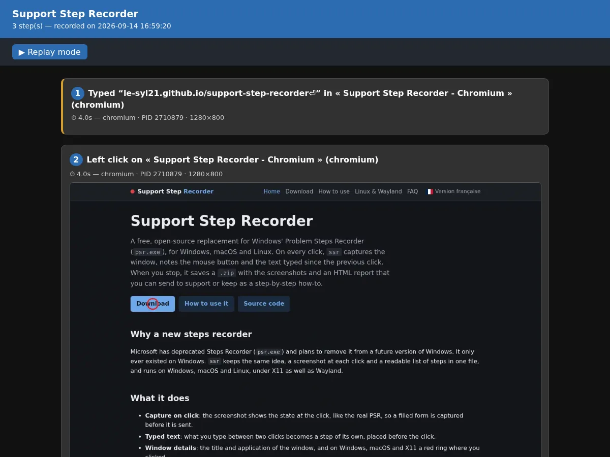

How to record your steps
Start, do what you want to show, stop and save. This page goes through a recording and what ends up
in the .zip.
1. Start
Open ssr and click Start. The status bar at the bottom shows
Recording, followed by the input backend in use.
- Screenshots first go to a temporary folder (
support-step-recorderinside the system's temporary directory). They are deleted when you start the next recording, so save the session if you want to keep it. - On a Wayland session, your desktop now asks which window or screen to share: see the consent dialog.
2. Do the actions to document
- Each click, when the mouse button is released, takes a screenshot of the active window. On
Windows, macOS and X11, a red ring marks the spot you clicked, and clicks on
ssr's own window are not recorded. - Typed text is collected until the next click, then saved as a separate step just before that click. Letters, digits, punctuation, Space, Enter, Tab and Backspace are taken into account; arrows, function keys and shortcuts are not turned into text.
- Steps appear in the list on the left as you go. Select one, or use the Up and Down arrow keys, to see its screenshot, date, time since the start, action and window.
3. Stop and save
- Click Stop. A Save as dialog opens, with a name such as
session-20260914-153000.zip. - Pick a folder: the report is generated and the status bar shows where it was exported.
- If you cancel,
ssrwarns that the session will not be saved and offers Choose a folder or Discard session.
The FR/EN button switches the interface language; the report is written in the language selected when you save. The round button next to it cycles the theme: light, dark, system.
What the ZIP contains
| File | Content |
|---|---|
report.html | The report, to open in any web browser. |
step-0001.webp, step-0002.webp… | One screenshot per click, in WebP. |
steps.json | The same steps in JSON, for scripts and ticketing tools. |
The HTML page loads the WebP files placed next to it: extract the whole archive before opening
report.html.
Reading the report

- The header gives the number of steps and the recording date.
- Each step shows its number, a description such as Left click on « window title » (application), the time since the start, the application, its process ID and the window size. Typed-text steps are marked with a yellow bar.
- Click a screenshot to view it full screen; click again or press Escape to close it.
- Replay mode shows one step at a time. Move with the Previous and Next buttons or the Left and Right arrow keys.
The steps.json format
An array of steps. Each has an index, a timestamp_ms (milliseconds since the Unix epoch),
an elapsed_ms since the start, an action ("type": "click" with
button and, when known, x, y, rel_x, rel_y; or
"type": "text" with content), the window when known, the
screenshot file name for clicks, and the description. A typed-text step from the demo
session above:
[
{
"index": 1,
"timestamp_ms": 1789397964643,
"elapsed_ms": 4011,
"action": {
"type": "text",
"content": "le-syl21.github.io/support-step-recorder\n"
},
"window": {
"title": "Support Step Recorder - Chromium",
"app_name": "chromium",
"pid": 2710879,
"x": 0,
"y": 0,
"width": 1280,
"height": 800
},
"description": "Typed “le-syl21.github.io/support-step-recorder⏎” in « Support Step Recorder - Chromium » (chromium)"
}
]